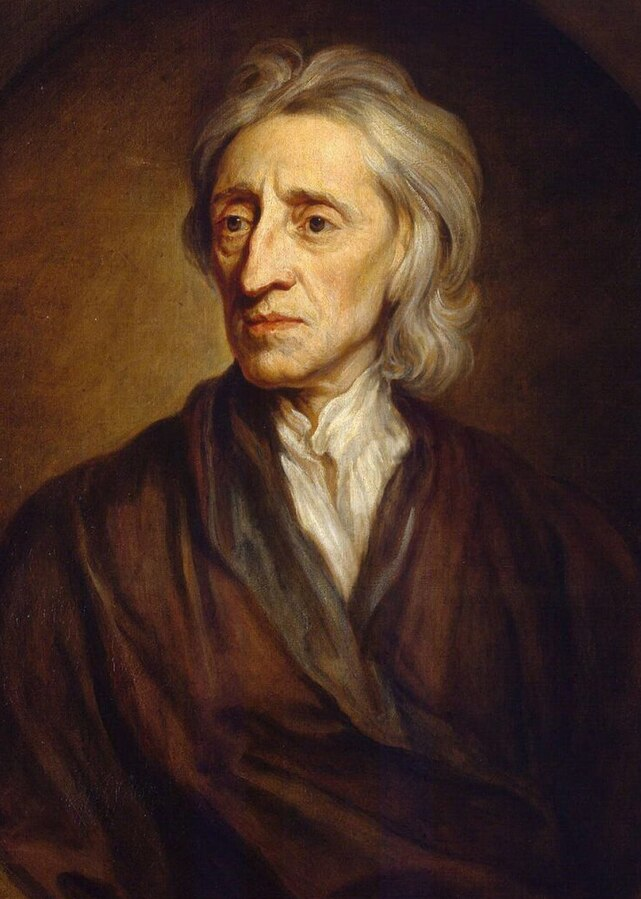
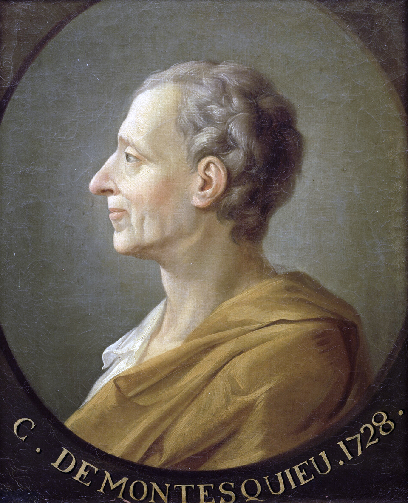
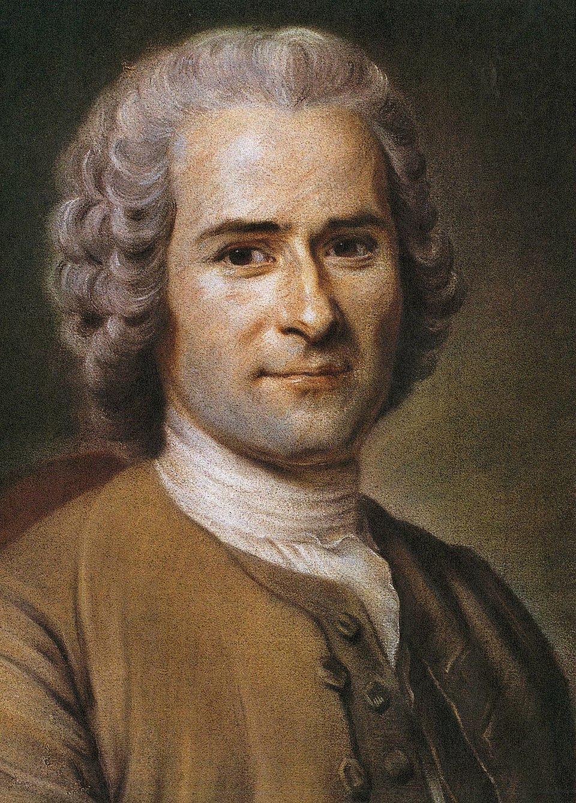

Iluminismo
O Iluminismo, também conhecido como Era das Luzes, foi um movimento intelectual, filosófico e cultural que surgiu na Europa durante os séculos XVII e XVIII.
Seu principal objetivo era promover o uso da razão como ferramenta para compreender e transformar o mundo, combatendo o obscurantismo, o absolutismo e os dogmas religiosos.
1. Características do Iluminismo
- Racionalismo: valorização da razão como meio de alcançar o conhecimento e o progresso.
- Liberdade: defesa das liberdades individuais, de expressão, religiosa e política.
- Laicismo: separação entre Igreja e Estado, com crítica à influência religiosa sobre a política.
- Crítica ao absolutismo: oposição ao poder concentrado nas mãos dos monarcas.
- Valorização da ciência: incentivo à pesquisa científica e ao método experimental.
2. Principais Pensadores
- John Locke: defensor dos direitos naturais (vida, liberdade e propriedade) e da teoria do contrato social.
- Voltaire: crítico da intolerância religiosa e defensor da liberdade de expressão.
- Montesquieu: propôs a divisão dos poderes em Executivo, Legislativo e Judiciário.
- Jean-Jacques Rousseau: autor do “Contrato Social”, defendia a soberania popular e a democracia direta.
- Diderot e d’Alembert: organizadores da Enciclopédia, obra que reunia o conhecimento da época.



3. Impactos do Iluminismo
O Iluminismo influenciou profundamente diversos eventos históricos, como a Revolução Francesa, a Independência dos Estados Unidos e os movimentos de independência na América Latina.
Também contribuiu para o surgimento de ideias modernas sobre direitos humanos, democracia e cidadania.
4. Frase Representativa
“O homem nasce livre, e por toda parte encontra-se acorrentado.” – Jean-Jacques Rousseau